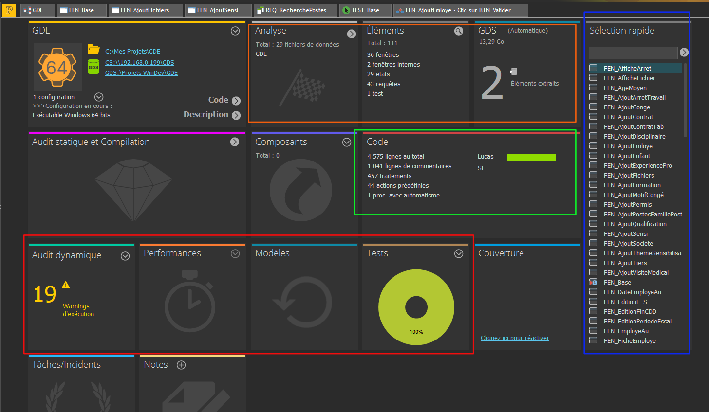

Trace 1 - Organisation générale du projet dans l'environnement de développement
Savoir-faire élémentaires
- Savoir repérer les éléments constitutifs d'un projet
- Savoir comprendre l'organisation d'un projet existant
- Savoir identifier les composants utiles à une tâche
- Savoir se repérer dans une arborescence de projet

Repères colorés sur la trace
- Encadré vert : Repartition de la charge de travail en terme de nombre de lignes de code.
- Encadré orange : Zone mettant en avant le nombre de fenêtres et autre information concernant la taille du projet.
- Encadré bleu : Accès rapide aux éléments principaux du projet.
- Encadré rouge : Suivi des performances techniques comme reussite de tests ou eventuelles anomalies.
Descriptif général de la trace
Cette trace montre l'organisation générale du projet dans l'environnement de développement. On y voit les différents éléments qui composent l'application, comme les fenêtres, requêtes, traitements ou autres composants associés. Cette vue d'ensemble est importante car elle permet de comprendre comment le projet est structuré et comment s'y repérer pour intervenir efficacement.
Descriptif des savoir-faire
L'encadré vert met en evidence ma contribution au seins du projet, ce qui montre ma capacité à travaillé en equipe ou à travailler de manière autonome. L'encadré orange met en évidence la vue globale du projet, ce qui montre ma capacité à repérer les éléments constitutifs d'une application. L'encadré bleu met en évidence la vue globale du projet, ce qui montre ma capacité à repérer les éléments constitutifs d'une application. Enfin, l'encadré rouge met en avant une partie importante pour le suivi ou la compréhension du projet, révélant mon aptitude à travailler dans une structure complexe.